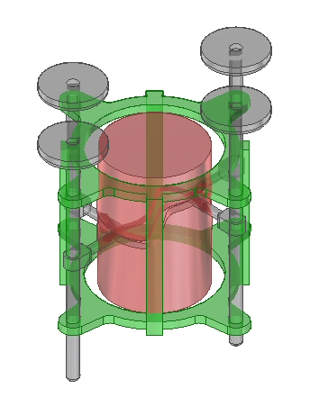
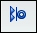
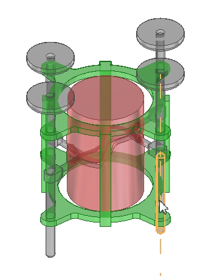
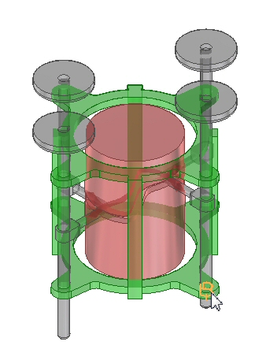
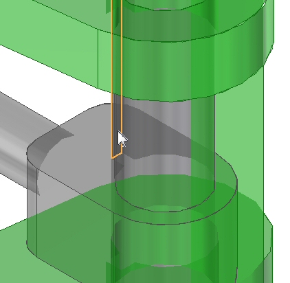
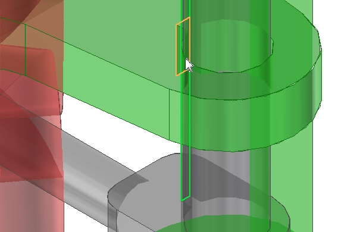
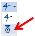
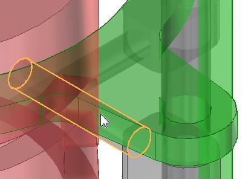
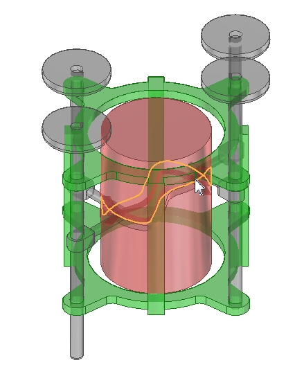

Activity: Creating a barrel cam relationship
The objective of this activity is to use the cam relationship to create a relationship to drive a barrel cam.
Click here to download the activity file.

The assembly you will open has four plungers. The cam relationship is already established on three of the plungers. You will assign the relationship to the remaining plunger.
-
Choose the File tab→Open→Browse command and select barrelcam.asm from the folder where the activity files are located.
Plunger.par:1 is unconstrained. The other plungers already have the needed relationships established. You will add the relationships needed to keep the plunger in the correct orientation and follow the groove in the barrel as it turns.
Choose the Home→Assemble→Axial Align command

.Select the axis of the plunger.

Align the plunger to the hole in alignment_ring.par.

Choose the Home→Assemble→Mate command .
Select the flat interior face of plunger.par:1 as shown.

On the command bar, set the offset type to Float.
Select the flat interior face of alignment_ring.par:1 as shown.

The plunger is constrained so that it will remain in the alignment ring. The cam relationship will now be established.
Choose the Home→Assemble→Cam command.

On the command bar, set the geometry type to Follower. Select the cylinder on plunger.par:1 as shown.

On the command bar, set the geometry type to Edge Chain. Select the outer edge on barrel.par as shown.

If the follower connects on the wrong side of the curve, click the Flip command on the command bar.
Click Accept.
The cam relationship is established. A motor has been defined using the axis of barrel.par.
Choose the Home→Motors→Simulate Motor command.
Click Play. The cam relationships cause the plunger to move as desired.
In this activity you used the cam relationship to make a cylindrical follower follow a 3D curve to control the motion of a plunger.
-
Click the Close button in the upper-right corner of the activity window.